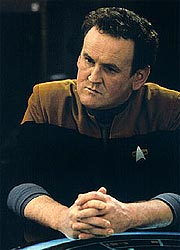
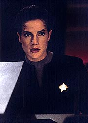
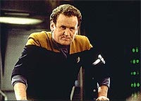
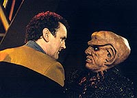
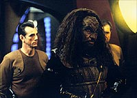

MANCHETE
DO EPISÓDIO
Segmento
anual de tortura de O'Brien
se sai com bela premissa temporal
Episódio
anterior | Próximo
episódio
Sinopse:
Data Estelar:
desconhecida.
O'Brien sofre um acidente e acaba
com um caso de leve de envenenamento radioativo. Ele tira uns dias
de folga. Enquanto isso, uma delegação Romulana chega a DS9 para
um encontro a fim de obter informações em primeira mão sobre o
Dominion (como parte do tratado que permite a utilização de um
dispositivo de camuflagem pela Defiant). O'Brien vai ao Quark's
jogar dardos quando tem uma estranha experiência, uma espécie de
"salto para o futuro", vendo uma duplicata de si próprio
conversando com Quark no nível superior do Promenade, no lado
oposto ao seu. Ele "volta" ao presente e desmaia.

Bashir
diz que alucinações são normais em se tratando de envenenamento
radioativo. Mas cinco horas mais tarde, O'Brien se vê falando com
Quark no mesmo ponto da "visão" anterior e olha para o
outro lado e vê a si próprio, como se concretizando tal
"visão". Dax acha que a radiação pode ter algo a ver
com os "saltos" do chefe. Quando ela está explicando
sua teoria, ele "salta" novamente, agora para o meio de
uma briga entre Klingons e Romulanos no Quark's.
Bashir examina o chefe de novo e conclui que os "saltos"
possuem um efeito acumulativo que pode levar O'Brien à morte.
Cinco horas (que permanece como o alcance dos demais
"saltos") mais tarde, O'Brien está no Quark's esperando
que a sua visão se concretize, o que de fato acontece, e ele vê
novamente a sua duplicata no meio da confusão. Pouco depois ele
"salta" de novo, só para observar a si próprio
examinar um painel em um corredor deserto da estação e ser morto
por uma espécie de feiser escondido no dispositivo.
De volta ao presente, O'Brien leva Odo e Sisko ao tal painel, que
se mostra totalmente inofensivo. Dax detecta certas emissões na
estação que parecem estar interagindo com a radiação residual
no corpo do engenheiro e causando os "saltos". Bashir
planeja neutralizar tais efeitos no corpo do chefe. Kira informa a
Sisko que moveu os Romulanos para outros aposentos,
coincidentemente vizinhos ao painel que O'Brien os havia levado
anteriormente.
Algum tempo depois, um dispositivo de vigilância é transportado
para dentro do painel. Odo suspeita dos Klingons (três beberrões
que chegaram recentemente à estação) e acaba provando que eles
são da inteligência do Império espionando os Romulanos (e
modificaram um replicador da estação para o transporte). A arma
que O'Brien viu em ação era um mero dispositivo de segurança.
O'Brien acha que driblou a morte, mas logo em seguida dá outro
salto e encontra o seu cadáver na enfermaria. Bashir lhe dá
crucial informação para que o seu eu passado possa curar o chefe
antes que o pior aconteça. O chefe é novamente salvo. Dax
determina que a fonte das emissões é uma singularidade quântica
orbitando a estação. O chefe sofre um novo "salto",
agora para um explorador pilotado por um outro O'Brien, em meio a
uma evacuação de emergência da estação, e vislumbra a destruição
da DS9 e o colapso da Fenda Espacial.

O'Brien
se voluntaria para uma arriscada missão (um "salto"
controlado para o futuro, com um dispositivo concebido por
Bashir), pois a injeção de mais isótopos radioativos poderá
mata-lo. Ele "salta" apenas três horas e meia para o
futuro e recruta o seu outro eu. Os dois vão para o OPS, só para
presenciar o ataque de uma Ave de Guerra Romulana que acabara de
se descamuflar. A singularidade detectada por Dax é o núcleo de
dobra de tal nave. O'Brien não irá sobreviver a um outro salto e
o seu futuro eu toma o seu lugar e usando o dispositivo volta e
avisa a Sisko e aos outros.
Sisko racionaliza então que devido aos Romulanos temerem tanto o
Dominion, eles planejavam selar a Fenda Espacial e destruir DS9
sem deixar rastros, para que tudo parecesse um acidente. O
comandante confronta os Romulanos, dizendo que tem a nave sob mira
e com o dedo no gatilho. Os Romulanos recuam e partem. O
"futuro" O'Brien assume definitivamente a posição do
"presente" O'Brien.
Comentários:
Tivemos uma extremamente inteligente história de paradoxos
temporais e universos alternativos (ou realidades alternativas)
nesta semana. O episódio tem um passo extremamente acelerado,
tendo sempre uma coisa interessante acontecendo, e os paradoxos
temporais são utilizados tanto de uma forma cômica quanto séria,
trazendo reflexões. Temos aqui, sem dúvida, mais trama do que
personagem, mas o resultado final é irresistível. Para mais
detalhes, sem precisar morrer três vezes e ser substituído por
um eu alternativo do futuro no processo, leiam as linhas abaixo.
Uma temporada de DS9 nunca está completa sem um episódio
do tipo "vamos torturar o chefe O'Brien" (TM). Esta
semana ele é posto à prova novamente.

A
história é bastante simples, apesar de uma certa abstração em
seu conceito causar confusão em alguns fãs. Tomando por hipótese
que existam infinitos universos paralelos que, devido a um sempre
presente processo de "escolhas" (em todos os níveis e
mesmo do que chamamos de "acaso") no
"interior" de cada um deles, dão origem individualmente
a uma infinidade de outros universos paralelos. Em um processo
contínuo.
(A história de "Visionary" não adere
completamente a esta filosofia e nem a explicita, mas tal conceito
explica bastante bem o que ocorre no episódio e por isso que ela
é adotada aqui.)
Posto isto, O'Brien foi contaminado por radiação e tal
acontecimento criou uma infinidade de universos alternativos,
todos com o chefe contaminado. Todos estes chefes se tornaram
"saltadores no tempo" para cinco horas no futuro devido
à interação de tal radiação residual com as emanações do núcleo
de dobra (na realidade uma singularidade quântica confinada) da
nave Romulana. Isso explica por que as duas visões de um mesmo
salto nunca são casadas, sempre existindo diferenças. O
"nosso" O'Brien visitou e foi visitado por outros
O'Brien. Tudo que ocorreu no episódio de fato ocorreu, mas
ocorreu considerando também estes demais universos alternativos.
(O que terá acontecido com DS9 nos universos alternativos em que
O'Brien não foi afetado pela radiação?)

A
história não explicita, mas o deslocamento espacial durante os
"saltos" pode ser explicado, considerando um possível
"alinhamento" entre o chefe, o seu "destino" e
o núcleo de dobra da nave Romulana (será que um dos
"infinitos O'Brien" foi parar no espaço?). Cabe
salientar que a escolha do plano de órbita (uma elipse é uma
curva plana) da Ave de Guerra, também produz, por sua vez, mais
uma "infinidade de universos alternativos".
Parece que temos que agradecer ao "acaso" por este
bizarro fenômeno ter ajudado Sisko e cia. a desvendar os
estratagemas dos Klingons e dos Romulanos. A idéia de Julian de
controlar o salto usando a "constante de decaimento" dos
isótopos em vez de sua "concentração" foi bastante
boa. A volta é que ficou sem explicação, especialmente a volta
do "outro" O'Brien (sem falar que Bashir nem reparou que
O'Brien voltou de pijama, e não de uniforme). O "outro"
O'Brien não desmaia no último "salto", pois a
"concentração" de isótopos no seu corpo era muito
baixa. Os desmaios de O'Brien eram causados pelos efeitos nocivos
da radiação. Que eram aumentados a cada "salto" em um
sentido ou no outro.
É justificável que os Romulanos queiram cuidar do tratado em
primeira mão com Sisko (e sua equipe) e não em segunda mão com
os almirantes do comando da Frota. Especialmente que o objeto de
tal tratado está instalado em uma nave atracada em DS9. Faz ainda
mais sentido que os Romulanosutilizassem tal encontro para
esconder a sua verdadeira agenda (as manobras de inspecionar a
Defiant e conduzir entrevistas dos oficiais seniores foram
particularmente sensíveis e feitas sem levantar nenhuma
suspeita). Eles consideram o Dominion uma terrível ameaça para
todo o quadrante Alfa e nunca tiraram nenhum proveito da Fenda
Espacial. Eles se livram de tal ameaça com o fechamento da Fenda
Espacial (impedindo também qualquer ganho que outras potências
do quadrante poderiam tirar dali no futuro, com ou sem Dominion) e
tem que destruir a estação no processo também (sem dúvida uma
atitude extrema, mas não impensável, dos Romulanos).
É de se supor que o grupo de Romulanos dentro de DS9 viesse a
fazer algum serviço de sabotagem nas cinco horas que faltavam
para o ataque. Para realmente não deixar provas sobre o que de
fato aconteceu. A ausência de naves atracadas também seria
importante. Entretanto uma bomba camuflada talvez fosse uma
manobra muito mais inteligente por parte dos Romulanos. Deixando a
Ave de Guerra para eliminar os eventuais casulos de fuga.
(Obviamente, depois desta lambança dos Romulanos, o dispositivo
de camuflagem fica definitivamente na Defiant.)
Devido ao estabelecimento (em "Face
of the Enemy" e "Timescape", de A
Nova Geração) de que os Romulanos usam uma
"singularidade quântica confinada" como base do seu
sistema de propulsão, parte da audiência já havia
"pescado" a Ave de Guerra antes do final do episódio.
Fica sem explicação por que Sisko, sabendo disso e de que a
singularidade orbitava a estação, não ordenou ao menos que os
escudos fossem levantados até que eles tivessem certeza?
(Seguindo o tema do episódio, talvez um dos "Siskos
alternativos" tenha feito isso.)
Que melhor disfarce poderiam ter três oficiais da inteligência
Klingon do que três estereótipos ambulantes, brigões e bêbados?
A idéia de transformar o replicador em um transporte foi bastante
interessante (dando mais uma vez uma amostra do quanto poderia dar
certo uma série de Jornada sobre os serviços de inteligência
da Frota e dos outros governos, aliados ou não).

O'Brien
tem uma devastadora experiência quando vê a "sua" própria
morte (frente ao disparo do dispositivo na parede) e a reflexão
do "outro" O'Brien sobre ser esta ou não a sua própria
vida também é interessante (ainda que não-explorada durante a série).
Entretanto, a melhor cena do episódio é quando O'Brien encontra
o próprio cadáver e reclama com Bashir sobre como o doutor o
deixou morrer. A interação entre dois é primorosa e tira o
melhor da insólita situação. Bravo!
Foi uma boa idéia dos produtores substituir o nosso O'Brien pelo
"outro" O'Brien do futuro, apesar disso trazer pouca
diferença prática à série (e de não ser explorado mais
tarde). Sisko enfrentando os Romulanos ao final também foi um
ponto forte e 100% no estilo do comandante. Todos os demais
personagens tiveram bons momentos, como: o fogo de Kira, a
habilidade de Odo, a inteligência de Dax e a ganância de Quark.
A direção de Reza Badiyi foi excelente. Alguns momentos: a
"Tomada de 'O tubarão'" do primeiro "salto"
de O'Brien, a bonita tomada ampla da reunião inicial entre Sisko
e Kira e os Romulanos, a reunião posterior entre Kira e os
Romulanos (reparem no perfeito casamento das múltiplas vistas da
cena) e a evacuação da estação. Todas as transições
envolvidas nos "saltos" de O'Brien foram também
excelentes. Por outro lado os efeitos da destruição da estação
estão completamente ultrapassados (além de não mostrarem a
Defiant) e os uniformes Romulanos continuam ridículos.
Meaney fica com o destaque da semana entre os regulares, frente às
provações do seu personagem. Ele é particularmente excelente
quando o seu personagem vê o "próprio" cadáver na
enfermaria. El Fadil também foi muito bem, transitando com grande
facilidade entre os momentos de humor e os mais sérios (a sua química
com Meaney é simplesmente mágica). O resto do elenco também foi
ótimo.
Apenas Jack Shearer se salvou entre os atores convidados (ainda
assim, sem grande brilho), Helde foi muito fraca e os atores que
fizeram os Klingons foram muito mal.
Outros bons momentos: Quark acertando Morn com os dardos (depois
pedindo ajuda na briga do bar e fazendo um inventário em
"tempo real" dos seus prejuízos e ao final sendo
interrogado pelos Romulanos), Kira "jurando que vai ser"
e depois "sendo" diplomática com os Romulanos, Odo
chamando a atenção de Sisko para a sua habilidade como
investigador (e dizendo que "sempre investiga o Quark"),
ou até os Romulanos desconfiando de que Odo esteja interessado em
Kira etc.
"Visionary" é mais um excelente episódio de DS9,
se movendo com grande velocidade e alto valor de entretenimento
associado. A premissa dos "saltos temporais" de O'Brien
é bastante interessante e posta para usos desconcertantes, tanto
para o espectador quanto para o personagem. A ameaça, tanto para
a estação quanto para o personagem, cresce de forma gradual e
paciente, com inúmeros elementos, a princípio periféricos, que
se juntam com bastante propriedade no final. Definitivamente não
o estilo de episódio que DS9 deve produzir semanalmente,
mas um belo esforço mesmo assim.
Citações
O'Brien - "I HATE
temporal mechanics!"
("Eu ODEIO mecânica temporal!")
Bashir - "If all you can hallucinate about is Quark's
maintenance problems, you have a sadly deficient fantasy
life."
("Se você só consegue alucinar sobre os problemas de
manutenção de Quark, você tem uma triste deficiência em suas
fantasias.")
Kira - "I'm always diplomatic."
("Eu sou sempre diplomática.")
Bashir - "Well, it could've been worse. It could've been
ME."
("Bem, poderia ter sido pior. Poderia ter sido EU.")
Odo - "Commander... there is no careful way to question a
Klingon."
("Comandante... não há um modo cuidadoso de se questionar
um Klingon.")
Bashir - "Who am I to argue with me?"
("Quem sou eu para discutir comigo mesmo?")
Trivia:
 A história de "Visionary" veio do professor
texano Ethan Calk, que depois venderia outra história sobre
paradoxos temporais que levaria ao clássico "Children of
Time" da quinta temporada. Ira Behr encomendou um roteiro
compatível para o seu amigo e escritor de ficção científica
John Shirley (e que nunca havia trabalhado com TV) e disse na época
que o processo foi tão difícil para Shirley que eles quase
terminaram a amizade. Ira Behr (o mentor de DS9) não ficou
muito satisfeito com o resultado final (de um "mistério
high-tech") que ele considerou mais adequado ao estilo de A
Nova Geração.
A história de "Visionary" veio do professor
texano Ethan Calk, que depois venderia outra história sobre
paradoxos temporais que levaria ao clássico "Children of
Time" da quinta temporada. Ira Behr encomendou um roteiro
compatível para o seu amigo e escritor de ficção científica
John Shirley (e que nunca havia trabalhado com TV) e disse na época
que o processo foi tão difícil para Shirley que eles quase
terminaram a amizade. Ira Behr (o mentor de DS9) não ficou
muito satisfeito com o resultado final (de um "mistério
high-tech") que ele considerou mais adequado ao estilo de A
Nova Geração.
Ira Behr não é muito fã de histórias que tenham premissas
muito técnicas ou que envolvam "tecnobaboseira", sendo
este talvez o maior motivo de suas discussões com Michael Piller
enquanto este último esteve à frente da série. É notório que
tal estilo de histórias foi menos utilizado após Behr assumir o
controle criativo de DS9, o que se deu durante a produção do
legendário episódio duplo "Improbable Cause" e "The
Die is Cast", desta terceira temporada.
O alvo do jogo de dardos toma o seu lugar definitvo no Quark's.
Cabe observar que o jogo foi utilizado para mostrar que os saltos
de O'Brien não levavam tempo algum no presente. Hironalina para
tratamento de envenenamento radioativo é uma referência ao episódio
da segunda temporada da Série Clássica "The Deadly
Years". Dois modelos de DS9 foram filmados para a sua
destruição em tela, mas infelizmente os produtores usaram muito
pouco do que foi filmado no produto final.
As outras participações de Jack Shearer em Jornada são
as seguintes: como Vadosia em "The
Forsaken" (da primeira temporada de DS9), como
o almirante Strickler em "Non
Sequitur" (da segunda temporada de Voyager) e
como o almirante Hayes em "Hope and Fear" (da
quarta temporada de Voyager), "Life Line"
(da sexta temporada de Voyager) e no filme "Jornada
nas Estrelas: Primeiro Contato".
Ficha
técnica:
História de Ethan H. Calk
Roteiro de John Shirley
Direção de Reza Badiyi
Exibido em 27/02/1995
Produção: 063
Elenco:
Avery Brooks como
Benjamin Lafayette Sisko
René Auberjonois como Odo
Nana Visitor como Kira Nerys
Colm Meaney como Miles Edward O'Brien
Siddig El Fadil como Julian Subatoi Bashir
Armin Shimerman como Quark
Terry Farrell como Jadzia Dax
Cirroc Lofton como Jake Sisko
Elenco convidado:
Jack Shearer
como Ruwon
Annette Helde como Karina
Ray Young como Morka
Bob Minor como Bo'rak
Dennis Madalone como Atul